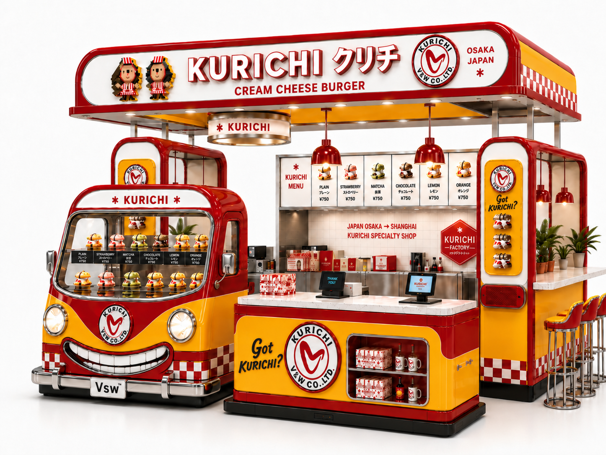
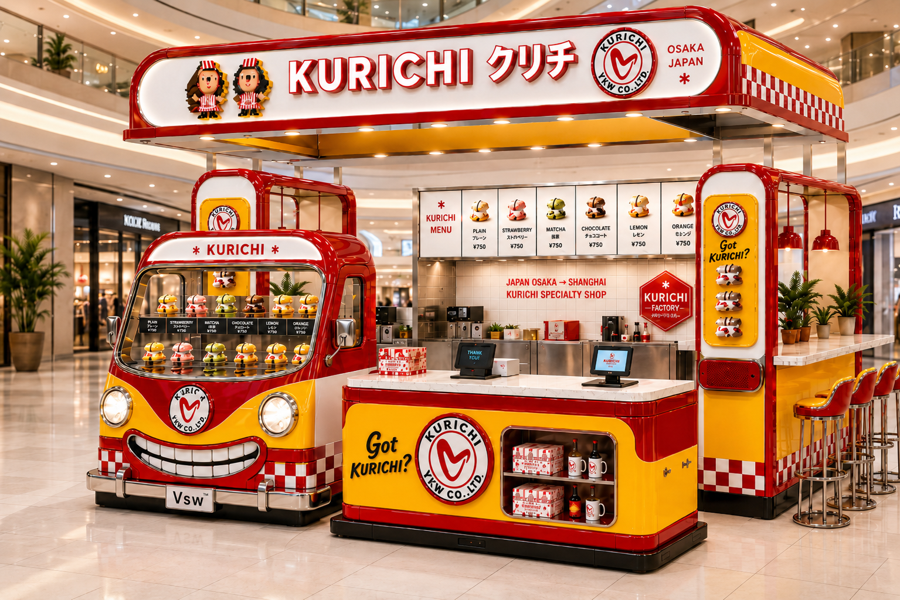
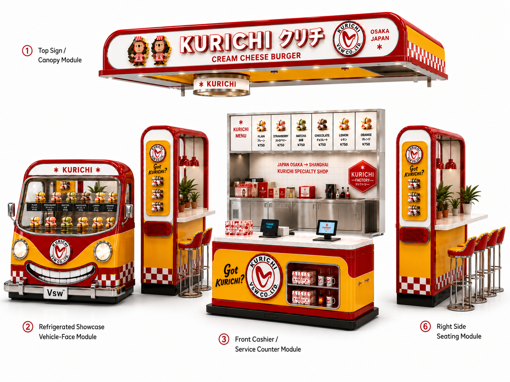

650㎡
島の中心・旗艦区画
来自日本的奶酪甜品IP乐园 ／ 日本发・奶酪甜品・沉浸式IP空间
中国 河北省 石家庄市・滹沱河 艺术生态岛 ｜ Neverland 滹沱河集
日本発のクリームチーズデザートブランド「#クリチ」が、石家庄の文旅施設「Neverland」の中心に出店する、食べる・撮る・遊ぶ・集めるを一体化した「食べられるキャラクターデザートパーク」。

クリチランドは、商品・キャラクター・世界観を一つの場所に結晶させた体験施設。来場者は「食べて終わり」ではなく、撮って・遊んで・集めて・また来たくなる。レトロポップな赤と黄色の世界が、島の中心で人を呼びます。
クリームチーズデザート、限定フレーバー、出来たての一口。
車顔ショーケース、大型ロゴ、Got KURICHI? の打卡（チェックイン）スポット。
KURICHI FACTORY の制作演出、ガーデンのイベント・キャラ体験。
Tシャツ・キーホルダー・フィギュア・限定グッズ。持ち帰れる世界観。
物販＋EC連動。「島の味」を家でも、リピートにつなげる。
クリチ系キャラ／ボクセル立像。会いに来る理由をつくる。
滹沱河の中洲に生まれる文化観光の島「滹沱河 艺术生态岛 / Neverland 滹沱河集」。生態・アート・自然と共生する独棟商業クラスターの中心区画に、クリチランドが旗艦テナント（主理人）として出店します。島の生態トーンに調和させながら、クリチの赤・黄で必ず立ち寄りたくなる"主役の風景"をつくります。

ブラウザの中を歩き回れる3D空間。1F FACTORY → 2F DINER → 屋上 SKY、そしてテラス GARDEN まで、2階建て＋屋上の配置と世界観をそのまま体験できます。
操作：ドラッグ＝見回す／ホイール＝ズーム／W A S D＝移動 ・ 下部ボタンで主要スポットへ — 別タブで全画面表示 ↗
建物は2階建て＋屋上。1階＝作る現場が見えるFACTORY、2階＝石家庄の冬を支える通年ダイナー＆キャラ・ミュージアム、屋上＝中洲と川を見下ろす絶景デッキ。外殻は木・緑・クリームでNeverlandに溶け込み、中に入ると赤黄が炸裂します。（footprint 約200㎡を前提に延床 約360–400㎡）

石家庄 Neverland の中心で、「食べる・撮る・遊ぶ・集める」を一体化する、
日本発のレトロポップなキャラクターデザートパーク。